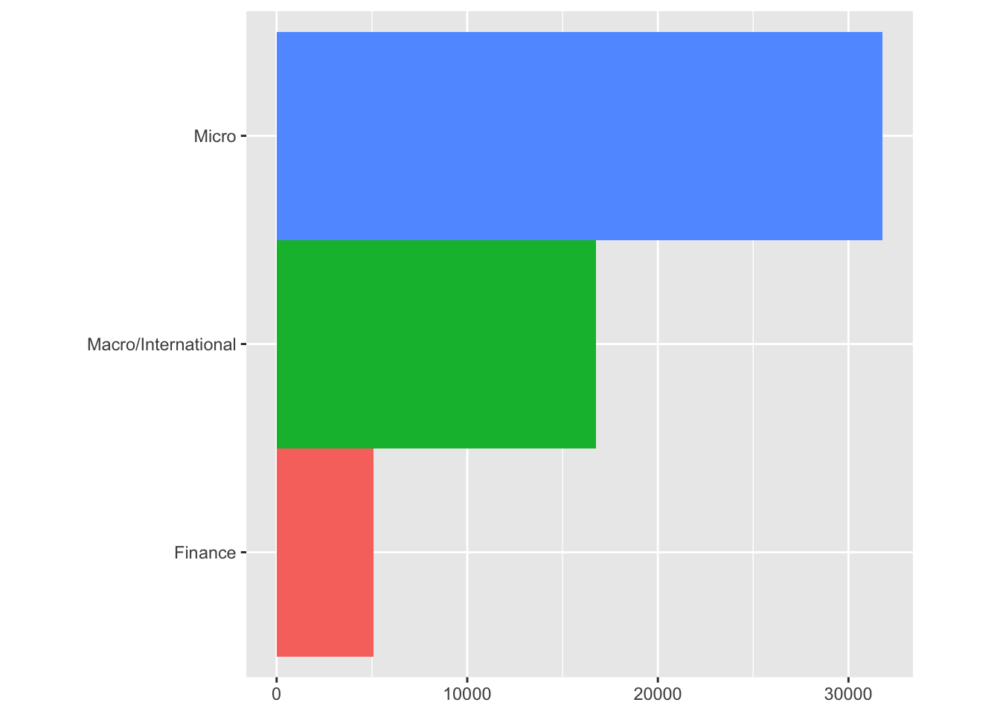
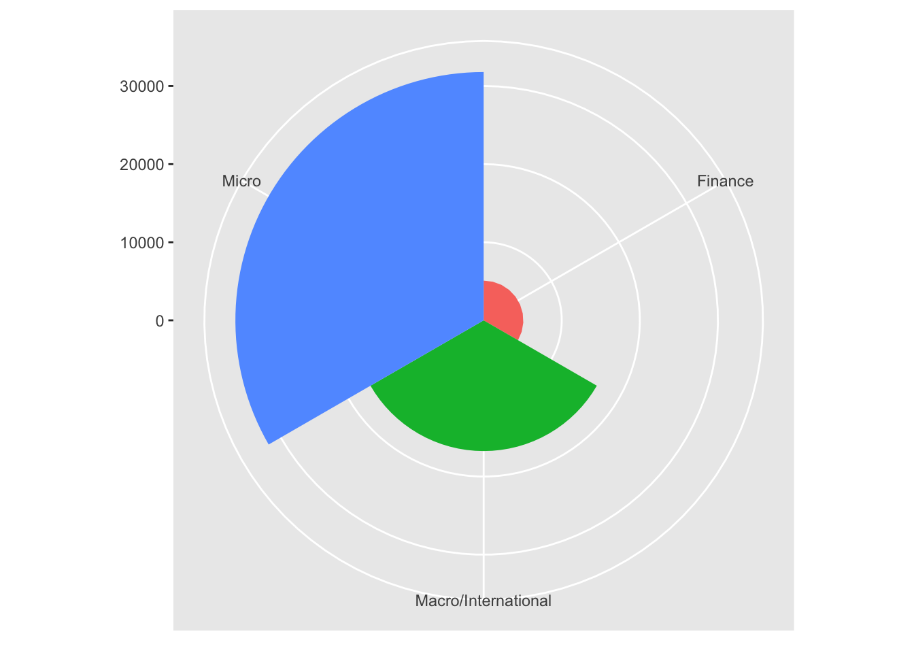
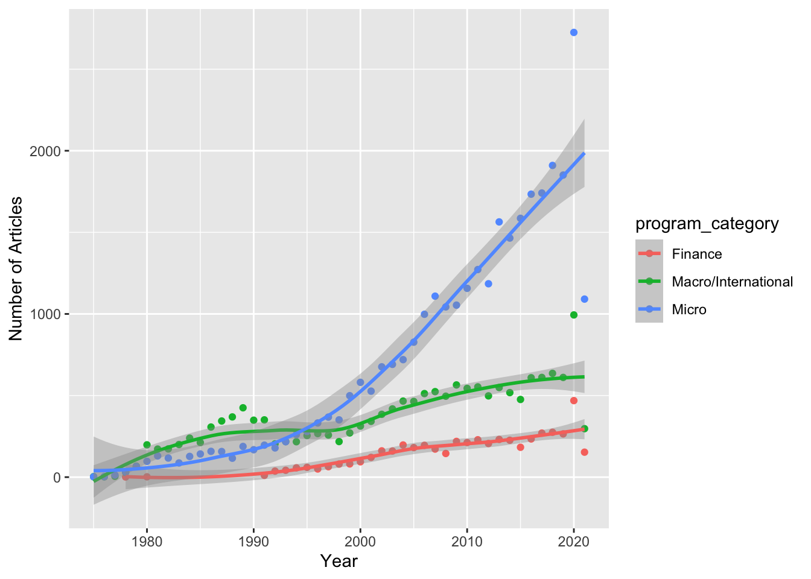
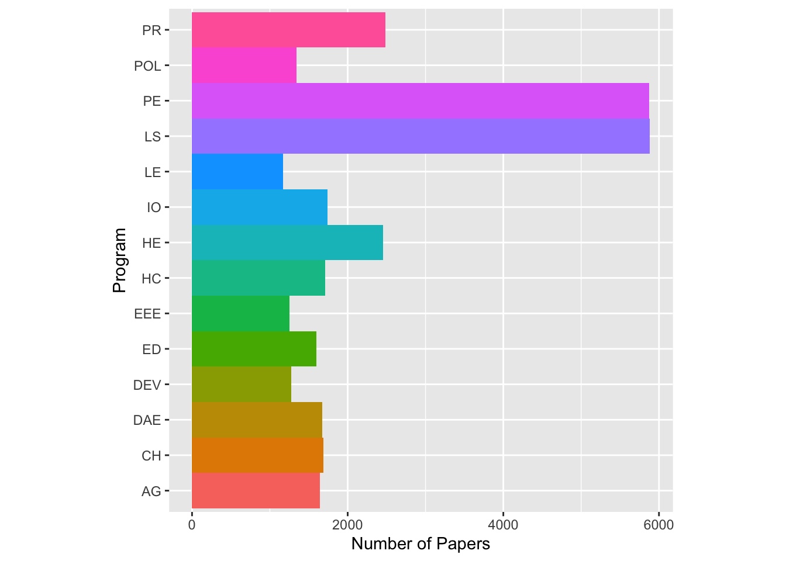

library(tidyverse) library(here) library(dplyr)
This assigment is focus is work with dataset from Tidy Tuesday (09/28/2021)
papers <- readr::read_csv('https://raw.githubusercontent.com/rfordatascience/tidytuesday/master/data/2021/2021-09-28/papers.csv')##
## ── Column specification ────────────────────────────────────────────────────────
## cols(
## paper = col_character(),
## year = col_double(),
## month = col_double(),
## title = col_character()
## )authors <- readr::read_csv('https://raw.githubusercontent.com/rfordatascience/tidytuesday/master/data/2021/2021-09-28/authors.csv')##
## ── Column specification ────────────────────────────────────────────────────────
## cols(
## author = col_character(),
## name = col_character(),
## user_nber = col_character(),
## user_repec = col_character()
## )programs <- readr::read_csv('https://raw.githubusercontent.com/rfordatascience/tidytuesday/master/data/2021/2021-09-28/programs.csv')##
## ── Column specification ────────────────────────────────────────────────────────
## cols(
## program = col_character(),
## program_desc = col_character(),
## program_category = col_character()
## )paper_authors <- readr::read_csv('https://raw.githubusercontent.com/rfordatascience/tidytuesday/master/data/2021/2021-09-28/paper_authors.csv')##
## ── Column specification ────────────────────────────────────────────────────────
## cols(
## paper = col_character(),
## author = col_character()
## )paper_programs <- readr::read_csv('https://raw.githubusercontent.com/rfordatascience/tidytuesday/master/data/2021/2021-09-28/paper_programs.csv')##
## ── Column specification ────────────────────────────────────────────────────────
## cols(
## paper = col_character(),
## program = col_character()
## )## Rows: 29,434
## Columns: 4
## $ paper <chr> "w0001", "w0002", "w0003", "w0004", "w0005", "w0006", "w0007", "…
## $ year <dbl> 1973, 1973, 1973, 1973, 1973, 1973, 1973, 1973, 1973, 1973, 1973…
## $ month <dbl> 6, 6, 6, 7, 7, 7, 8, 9, 9, 9, 9, 10, 10, 10, 10, 11, 11, 11, 12,…
## $ title <chr> "Education, Information, and Efficiency", "Hospital Utilization:…## Rows: 15,437
## Columns: 4
## $ author <chr> "w0001.1", "w0002.1", "w0003.1", "w0004.1", "w0005.1", "w00…
## $ name <chr> "Finis Welch", "Barry R Chiswick", "Swarnjit S Arora", "Lee…
## $ user_nber <chr> "finis_welch", "barry_chiswick", "swarnjit_arora", NA, "jam…
## $ user_repec <chr> NA, "pch425", NA, "pli669", "psm28", NA, NA, NA, "pli259", …## Rows: 21
## Columns: 3
## $ program <chr> "AG", "AP", "CF", "CH", "DAE", "DEV", "ED", "EEE", "E…
## $ program_desc <chr> "Economics of Aging", "Asset Pricing", "Corporate Fin…
## $ program_category <chr> "Micro", "Finance", "Finance", "Micro", "Micro", "Mic…## Rows: 67,090
## Columns: 2
## $ paper <chr> "w0001", "w0002", "w0003", "w0004", "w0005", "w0006", "w0007", …
## $ author <chr> "w0001.1", "w0002.1", "w0003.1", "w0004.1", "w0005.1", "w0006.1…## Rows: 53,996
## Columns: 2
## $ paper <chr> "w0074", "w0087", "w0087", "w0107", "w0116", "w0117", "w0129",…
## $ program <chr> "EFG", "IFM", "ITI", "PE", "PE", "LS", "HE", "IFM", "ITI", "HE…## # A tibble: 6 × 3
## program program_desc program_category
## <chr> <chr> <chr>
## 1 AG Economics of Aging Micro
## 2 AP Asset Pricing Finance
## 3 CF Corporate Finance Finance
## 4 CH Children Micro
## 5 DAE Development of the American Economy Micro
## 6 DEV Development Economics Micro## # A tibble: 6 × 4
## paper year month title
## <chr> <dbl> <dbl> <chr>
## 1 w0001 1973 6 Education, Information, and Efficiency
## 2 w0002 1973 6 Hospital Utilization: An Analysis of SMSA Differences in Ho…
## 3 w0003 1973 6 Error Components Regression Models and Their Applications
## 4 w0004 1973 7 Human Capital Life Cycle of Earnings Models: A Specific Sol…
## 5 w0005 1973 7 A Life Cycle Family Model
## 6 w0006 1973 7 A Review of Cyclical Indicators for the United States: Prel…## # A tibble: 6 × 2
## paper program
## <chr> <chr>
## 1 w0074 EFG
## 2 w0087 IFM
## 3 w0087 ITI
## 4 w0107 PE
## 5 w0116 PE
## 6 w0117 LS## # A tibble: 21 × 2
## program n
## <chr> <int>
## 1 AG 1646
## 2 AP 2722
## 3 CF 2361
## 4 CH 1689
## 5 DAE 1671
## 6 DEV 1277
## 7 ED 1601
## 8 EEE 1249
## 9 EFG 5803
## 10 HC 1708
## # … with 11 more rowsThe main goal is analyze the category of National Bureau of Economic Research working papers over the time.
papers_joined <- paper_programs %>%
left_join(programs) %>%
left_join(papers) %>%
filter(!is.na(program_category)) %>%
distinct(paper, program, program_category, year, title)## Joining, by = "program"## Joining, by = "paper"## # A tibble: 3 × 2
## program_category n
## <chr> <int>
## 1 Finance 5083
## 2 Macro/International 16735
## 3 Micro 31791Plot the results
P1<- ggplot(data=papers_joined) +
geom_bar(
mapping = aes(x=program_category , fill=program_category),
show.legend = FALSE,
width = 1)+
theme(aspect.ratio = 1)+
labs(x= NULL, y= NULL)
P1 + coord_flip()
 Now that we noticed that the program category behavior, we can check amount of papers through the years.
var2<- papers_joined %>%
subset(select= c(year, program_category)) %>%
group_by(year)%>%
count(program_category) %>%
group_by(year) %>% arrange(year)
#Plot Program category over the time
P2<- ggplot(data= var2, mapping= aes(x=year, y=n, color= program_category)) +
geom_point() +
geom_smooth()+
xlab("Year") +
ylab("Number of Articles")
P2 ## `geom_smooth()` using method = 'loess' and formula 'y ~ x' From the graph we can see that the category Micro has been have a huge increse in the last 20 years, could be interesting to analyze what are the programs with more influence inside of Micro category.
## # A tibble: 6 × 5
## paper program program_category year title
## <chr> <chr> <chr> <dbl> <chr>
## 1 w0074 EFG Macro/International 1975 Variation Across Household in the Rat…
## 2 w0087 IFM Macro/International 1975 Exports and Foreign Investment in the…
## 3 w0087 ITI Macro/International 1975 Exports and Foreign Investment in the…
## 4 w0107 PE Micro 1975 Social Security and Retirement Decisi…
## 5 w0116 PE Micro 1975 Notes on the Tax Treatment of Human C…
## 6 w0117 LS Micro 1980 Job Mobility and Earnings Growthvar3<- filter(papers_joined, program_category=="Micro")
P3<- ggplot(data=var3) +
geom_bar(
mapping = aes(x=program , fill=program),
show.legend = FALSE,
width = 1)+
theme(aspect.ratio = 1)+
labs(x="Program", y= "Number of Papers")
P3 + coord_flip() The graph shows that Public Economic and Labor Studies are the programs with major number of papers inside of Micro category.